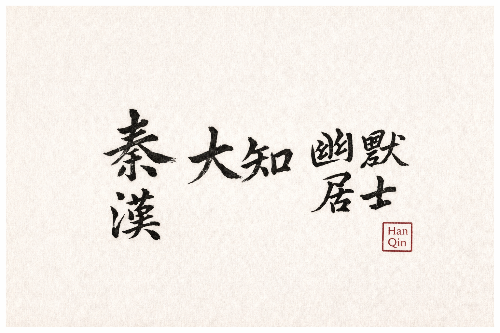

Han Qin · 秦汉
About
关于

Calligraphy · 大知 幽默居士 · Han Qin 大知 幽默居士 · 秦汉书
Non dubito is Latin for "I do not doubt." In the current Self-as-an-End (SAE) framework, it names an unwillingness to waver on one structural point: a subject is an end, not merely a means. It is neither certainty about the world nor a claim that the self cannot be wrong. A person's judgments and actions remain open to criticism; what criticism cannot cancel is that person's standing as a subject and an end.
At 15DD this recognition runs in one direction: a self-legislating subject recognizes the other as an end. At 16DD it becomes mutual non dubito: two subjects recognize one another without requiring either to become a copy, instrument, or extension of the other.
This site collects philosophical essays applying the SAE framework to the lives and thought of thinkers across East and West. The goal is not historical scholarship but structural analysis: what kind of subjectivity did Socrates embody? What structural failure explains Nietzsche's collapse? What does Wang Yangming's enlightenment look like in dimensional terms?
These essays are written for human readers — accessible, personal, following the argument wherever it goes. They are the companion to self-as-an-end.net, which hosts the full academic paper series.
Han Qin (秦汉) is an independent researcher and the author of the Self-as-an-End theory series. The SAE framework is a structural normative theory that derives the conditions of personhood through the chisel-construct cycle (凿构循环) and a dimensional sequence running from 0D through 16DD.
Non dubito 是拉丁文，意为“我不怀疑”。在现行 Self-as-an-End（SAE）框架中， 它指的是对一个结构事实的不疑与不动摇：主体是目的，而不只是手段。 它不是对世界的确定性，也不是宣称自己不可能犯错。一个人的判断和行动仍然可以被质疑； 质疑不能取消的，是这个人作为主体、作为目的的地位。
在 15DD，这种承认是单向的：自我立法主体承认他者也是目的。在 16DD，它成为双向不疑： 两个主体相互承认，而不要求任何一方成为另一方的复制品、工具或延伸。
Non dubito 是拉丁文，意為「我不懷疑」。在現行 Self-as-an-End（SAE）框架中， 它指的是對一個結構事實的不疑與不動搖：主體是目的，而不只是手段。 它不是對世界的確定性，也不是宣稱自己不可能犯錯。一個人的判斷和行動仍然可以被質疑； 質疑不能取消的，是這個人作為主體、作為目的的地位。
在 15DD，這種承認是單向的：自我立法主體承認他者也是目的。在 16DD，它成為雙向不疑： 兩個主體相互承認，而不要求任何一方成為另一方的複製品、工具或延伸。
这个网站收录了将 SAE 框架应用于东西方思想者生命与思想的哲学随笔。 目标不是历史考证，而是结构分析：苏格拉底体现了什么样的主体性？ 结构性的什么失败解释了尼采的崩溃？王阳明的龙场悟道在维度意义上是什么？
这些文章为人类读者而写——可读的，个人的，跟着论证走到哪里就写到哪里。 它们是 self-as-an-end.net 的伴侣， 后者收录了完整的学术论文系列。
秦汉（Han Qin）是独立研究者，Self-as-an-End 理论系列的作者。 SAE 框架是一个结构性规范理论，通过凿构循环和从 0D 至 16DD 的维度序列推导人格的条件。
秦漢（Han Qin）是獨立研究者，Self-as-an-End 理論系列的作者。 SAE 框架是一個結構性規範理論，通過鑿構循環和從 0D 至 16DD 的維度序列推導人格的條件。